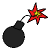

Información
Puede que determinados momentos tengas pensamientos donde deseas provocar alguna burla contra otra persona. Debes de resistir, una forma es la de analizar las consecuencias desagradables que pueden traerte a ti, incluso hasta tu familia.
|  | |
| Condiciones de victoria | |
| Deberás mantener encerrado a todos los malos pensamientos hasta que se acabe el tiempo | |
| Condiciones de derrota | |
| Si dejas escapar un mal pensamiento del globo y este se sale de la pantalla del juego | |
Controles
 |
Dale clic sobre el globo para que aparezca un parche de color, mantén presionado el clic del mouse para que aparezcan parches de colores entre pequeños lapsos de tiempo |